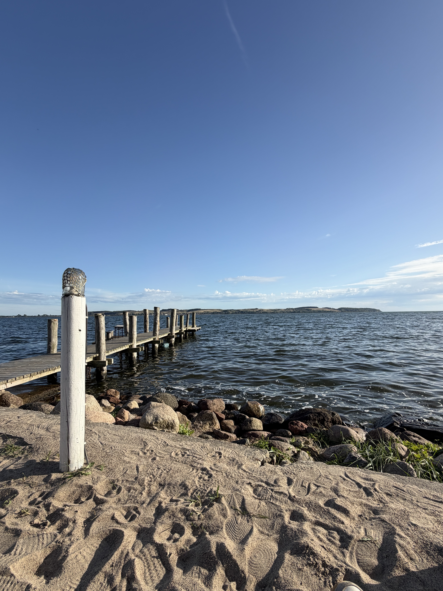
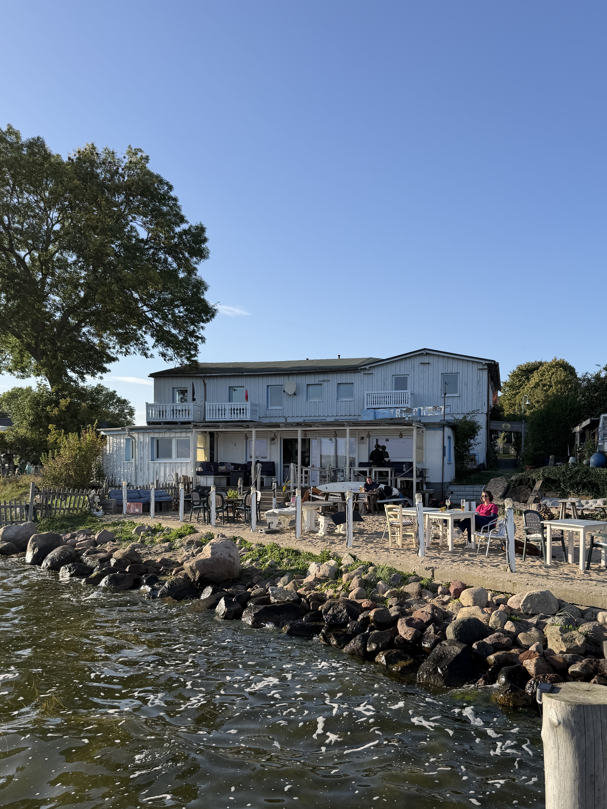
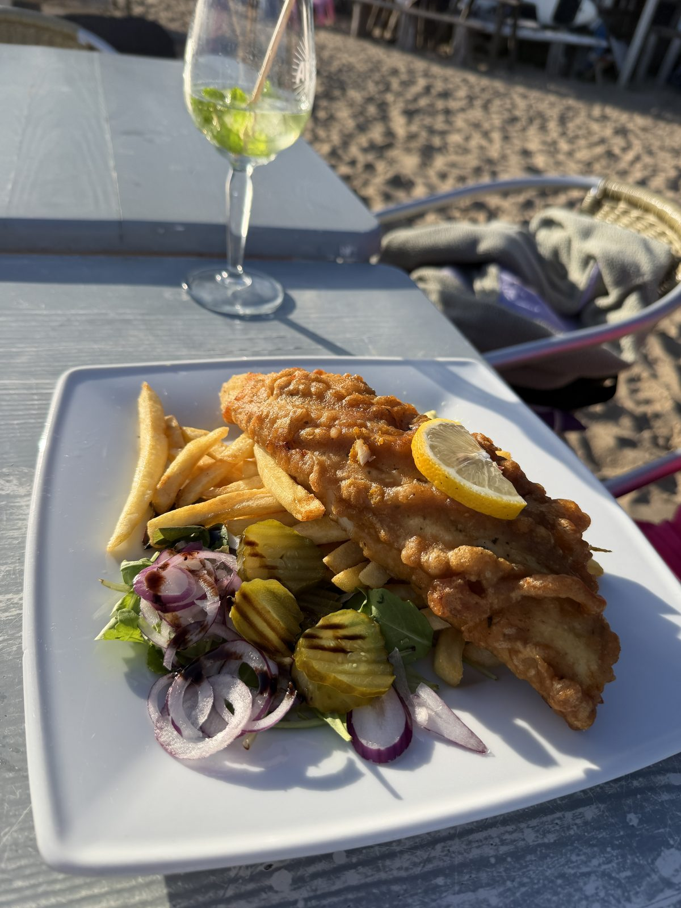
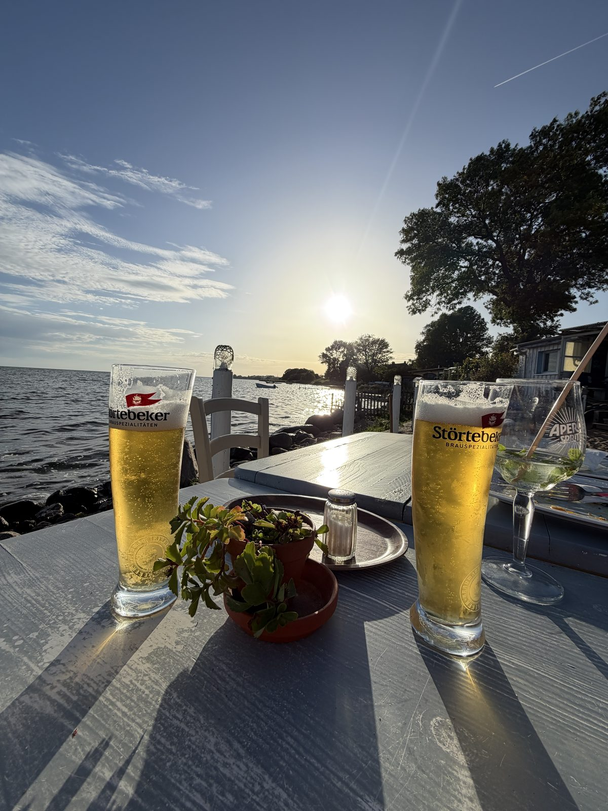

7. September 2026
Mönchgut


Die Bilder erzählen von einem schönen Abend, den wir auf dem Mönchgut verbracht haben. Wir sind einfach an einer Kneipe vorbeigekommen, und plötzlich eröffnete sich eine nette Strandbar vor uns.
Dort haben wir hervorragende Fish and Chips gegessen und dem Sonnenuntergang zugeschaut – es war einfach sehr schön.

